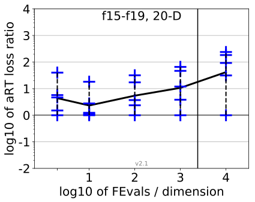
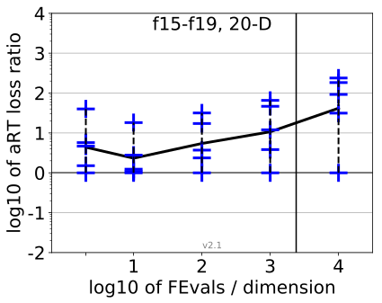

{kind=link}
{kind=link}
{kind=link}
{kind=link}
{kind=link}
{kind=link}
{kind=link}
{kind=link}
 
All functions in 5-D and 20-D
f1–f24 in 5-D, maxFE/D=2400
| #FEs/D | best | 10 % | 25 % | med | 75 % | 90 % |
|---|---|---|---|---|---|---|
| RLUS/D | 2e3 | 2e3 | 2e3 | 2e3 | 2e3 | 2e3 |
| 2 | 0.35 | 0.40 | 2.7 | 5.0 | 10 | 10 |
| 10 | 0.86 | 2.5 | 3.2 | 4.4 | 9.2 | 18 |
| 100 | 2.3 | 4.9 | 6.5 | 15 | 40 | 1.4e2 |
| 1e3 | 1.6 | 14 | 20 | 42 | 82 | 1.9e2 |
| 1e4 | 1.6 | 15 | 24 | 65 | 1.6e2 | 2.2e2 |
f1–f24 in 20-D, maxFE/D=2400
| #FEs/D | best | 10 % | 25 % | med | 75 % | 90 % |
|---|---|---|---|---|---|---|
| RLUS/D | 2e3 | 2e3 | 2e3 | 2e3 | 2e3 | 2e3 |
| 2 | 0.56 | 0.99 | 1.3 | 5.2 | 17 | 40 |
| 10 | 0.31 | 1.0 | 1.8 | 2.8 | 4.6 | 9.2 |
| 100 | 1.0 | 2.3 | 3.5 | 8.0 | 27 | 48 |
| 1e3 | 1.0 | 3.7 | 12 | 22 | 60 | 80 |
| 1e4 | 1.0 | 4.1 | 26 | 71 | 1.5e2 | 2.8e2 |
Separable functions in 5-D and 20-D
Misc. moderate functions in 5-D and 20-D
Ill-conditioned functions in 5-D and 20-D
Multi-modal functions in 5-D and 20-D
Weak structure functions in 5-D and 20-D
aRT loss ratios (see the previous figure for details). Each cross (+) represents a single function, the line is the geometric mean.{kind=link}
{kind=link}
{kind=link}